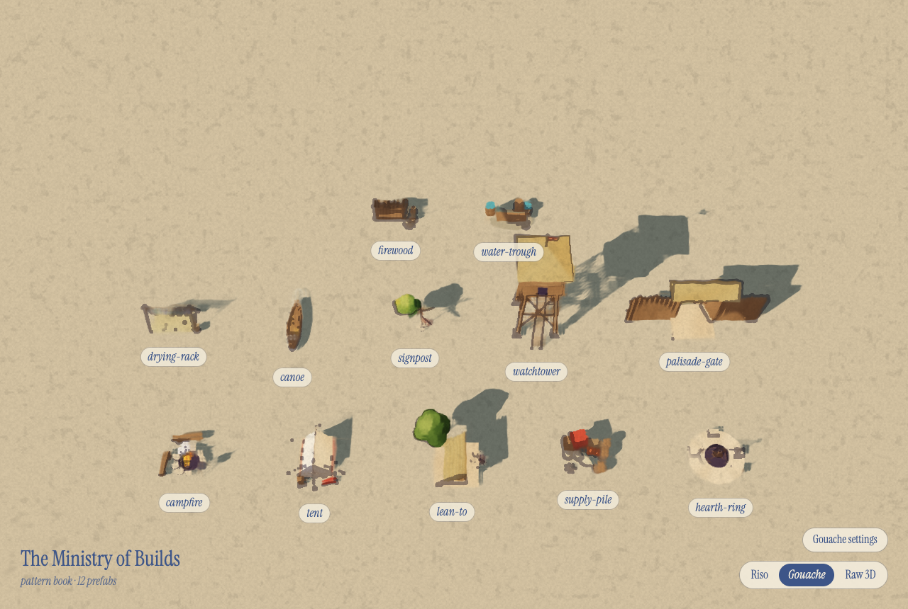
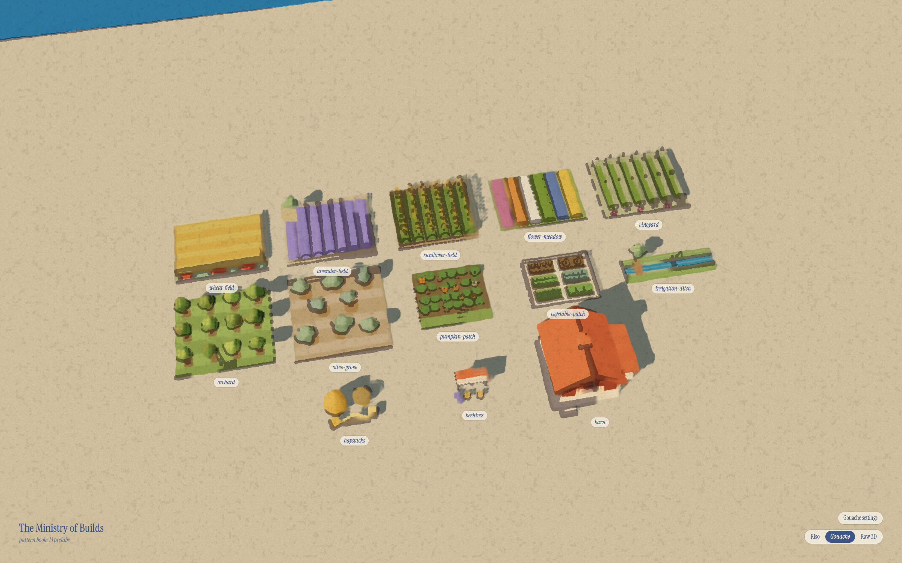
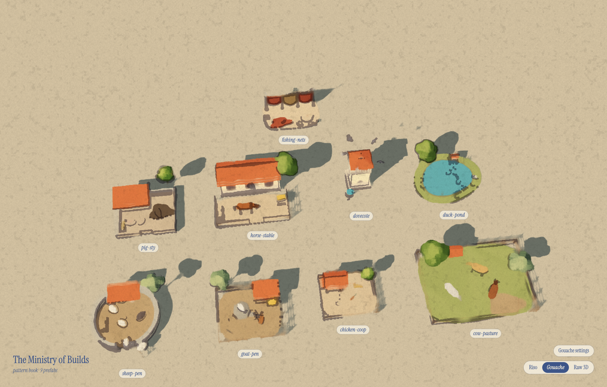
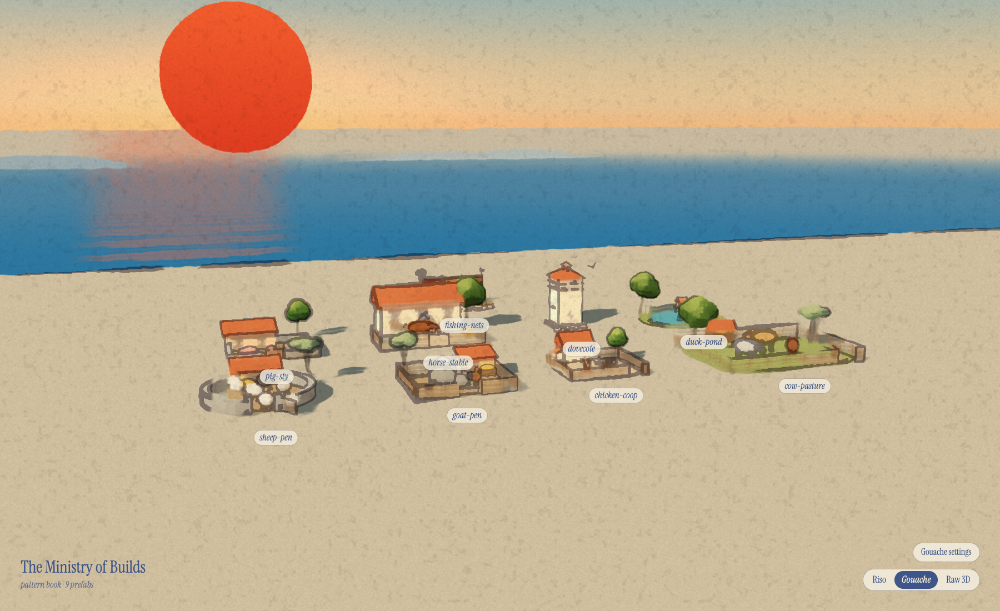
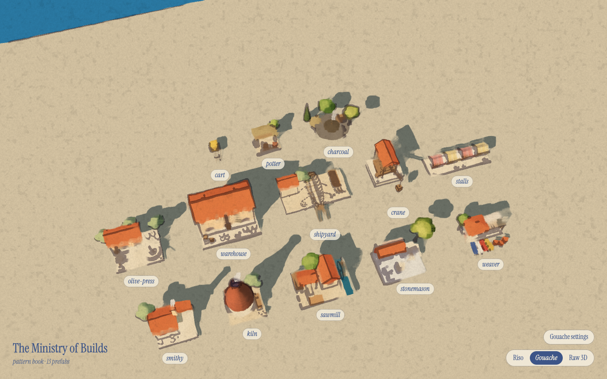
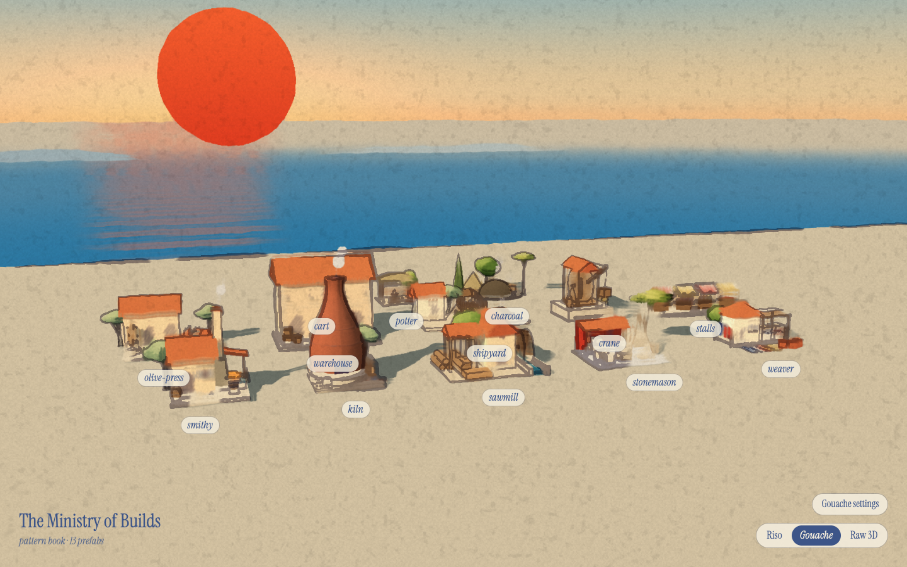
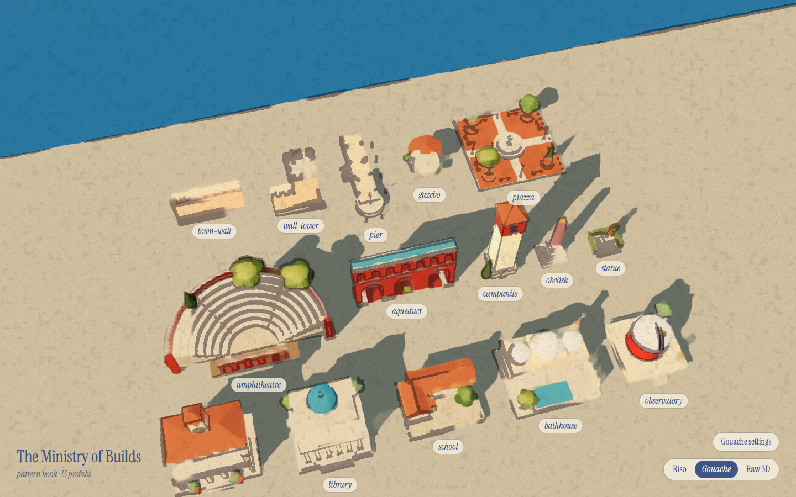
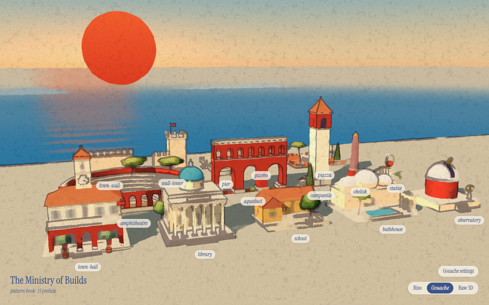
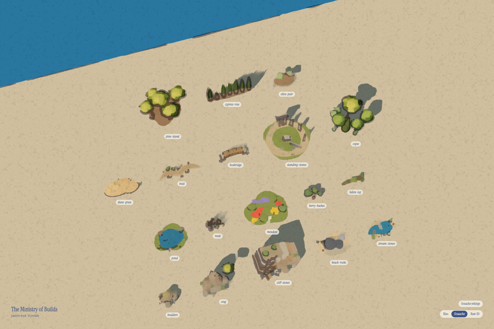

Starter library
everything a civilisation needs from scratch — bird's-eye contact sheets (eye-level where available). Batches update as builders finish.
Camp

Farming

Animals


Crafts & industry


Civic & culture


Nature

see any single one live: gallery.html?file=prefabs/<id>.js&view=bird